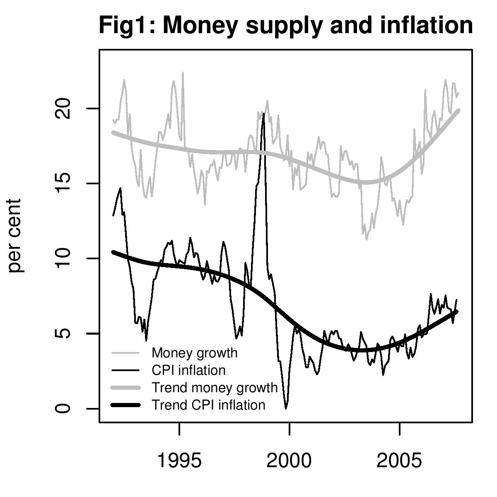

Aam aadmi in the hot seat
Indian Express, 16 November 2007
Is inflation now comfortably under control? Recent media headlines say that there has been a sharp drop in the inflation rate based on the Wholesale Price Index to below 3 per cent. It is suggested that tight monetary policies have been effective in bringing down inflation to within RBI's comfort zone. A closer look at the data however leads us to question both propositions. First, inflation is not in comfort zone: consumer prices continue to show a rising trend. Second, monetary policy has not been tight: large purchases of foreign exchange by RBI have raised money supply growth. Further, there is empirical evidence of a link between money supply and consumer prices. Bringing consumer inflation under control will require shifting away from the policy to preventing an appreciation of the rupee/dollar rate.
Figure 1 shows the graph of money supply and inflation in consumer prices since 1991. In both cases, year-on-year percentage changes are shown. The gray lines show the growth rate of money supply. This is measured by broad money, also known as M3. The black lines show the inflation rate based on the consumer price index for industrial workers (CPI). There is a sharp spike in 1998 when for a brief period consumer prices rose at 20 percent. The rate has moved down from above 5 percent in the 1990s to below 5 percent after 2000 and is seen to be rising again. Along with the raw data, a trend line is drawn using the standard techique developed by Robert J. Hodrick and recent Nobel prize winner Edward C. Prescott. In recent months, the trend values show money supply growth of above 20 percent and CPI based inflation of above 7 percent.
The trend lines in the two variables show that till mid-2002 both money supply and inflation were declining. After mid-2002, market forces implied that the rupee should have appreciated. This pressure was resisted by the RBI : it traded on the currency market to keep the rupee weak. This trading infused rupees into the economy. Part of this was "sterilised" by RBI by selling government bonds pulling out the liquidity injected by the intervention. The remainder spilled over into money supply, giving a sharp escalation in money supply growth.
The two trend lines show a striking common pattern - inflation has tended to be low when money supply growth was low and vice versa. This is not an exact month-to-month relationship, but over long time periods, it does show up quite clearly. In particular, in 2007, trend money supply growth has accelerated and CPI inflation has accelerated. This negates claims that are now being made about monetary policy being tightened and keeping inflation under control.
Why are the CPI and WPI telling two different stories about inflation? The WPI consists of a large component of tradables like chemicals, intermediate goods, commodities and various manufactured goods, whose prices have come down after the rupee appreciated. The larger the component of tradables in a price index, the more is going to be the direct impact of currency appreciation. The WPI also has a large component of administered prices such as oil and electricity which have not been raised by the government. Both the appreciation of the rupee and the failure of the government to raise oil prices has resulted in the WPI growing very slowly.
The WPI is relatively unimportant in thinking about inflation in India because no household consumes chemicals, metals or other intermediate goods. Consumer Price Indices are the best inflation measure in a country, as they measure prices of a basket of goods consumed by a certain sample of households. A large component of household consumption consists of "non-tradables" - goods and services that cannot be exported or imported. The prices of these goods are essentially determined by local demand and supply conditions. The prices of these goods are likely to be highly correlated with changes in money supply growth.
While ups and downs in tomato or onion prices will cause CPI inflation to jump up and down around the trend, the broad trend is a result not of changes in the prices of seasonal vegatables, but of monetary policy. In preceding decades, India had an inflation problem because monetary policy used to support large fiscal deficits by printing money. That problem was solved by politicians who realised that higher inflation reduces political support more than what is gained by higher fiscal spending. Now inflation is caused by large purchases of dollars by RBI in the foreign exchange market in an attempt to prevent the rupee getting stronger.
One of the strengths of Indian democracy is that politicians know that inflation leads to electoral reversals. The problem of massive fiscal deficits leading to high inflation was vigorously attacked by all finance ministers of the 1990s. In similar fashion, the exchange rate policy that has led to the increase in inflation in recent years will be solved by politicians when they realise that the political damage done by higher inflation is more than the political gains made by keeping the rupee weak.
Back up to Ila Patnaik's media page
Back up to Ila Patnaik's home page